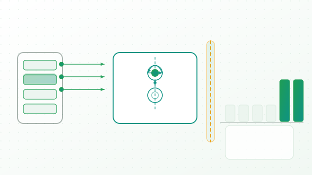

TrafficBASS: A Boundary-Aware Active Learning Framework for Endpoint Advanced Persistent Threat Detection
Faqi Zhao,Zhaoxuan Li,Wenhao Li,Huaifeng Bao,Guoqiao Zhou,Wen Wang,Feng Liu,Duohe Ma. IEEE Transactions on Information Forensics and Security, 21: 8022-8035, 2026
Published10.1109/TIFS.2026.3723137